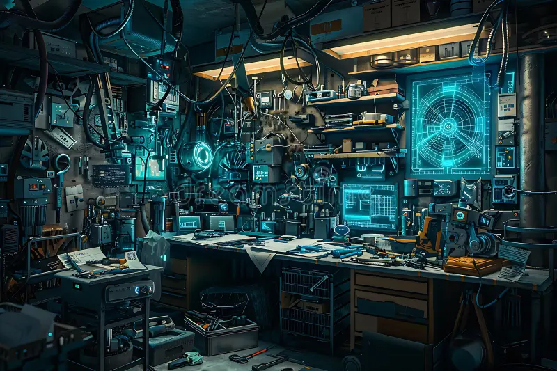
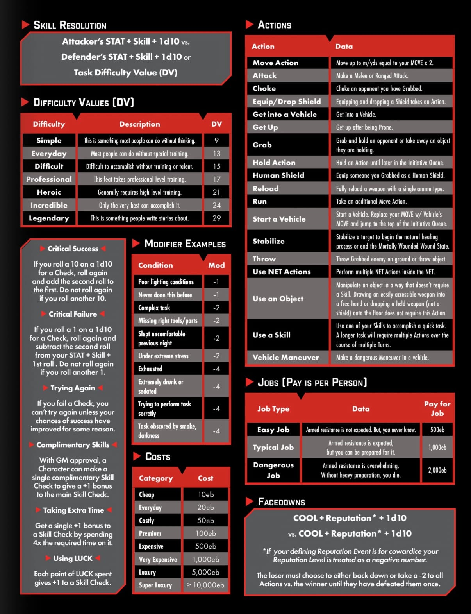
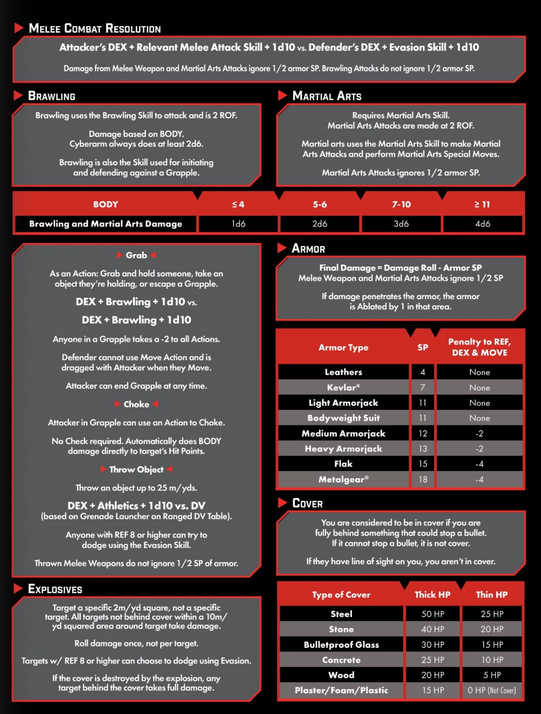
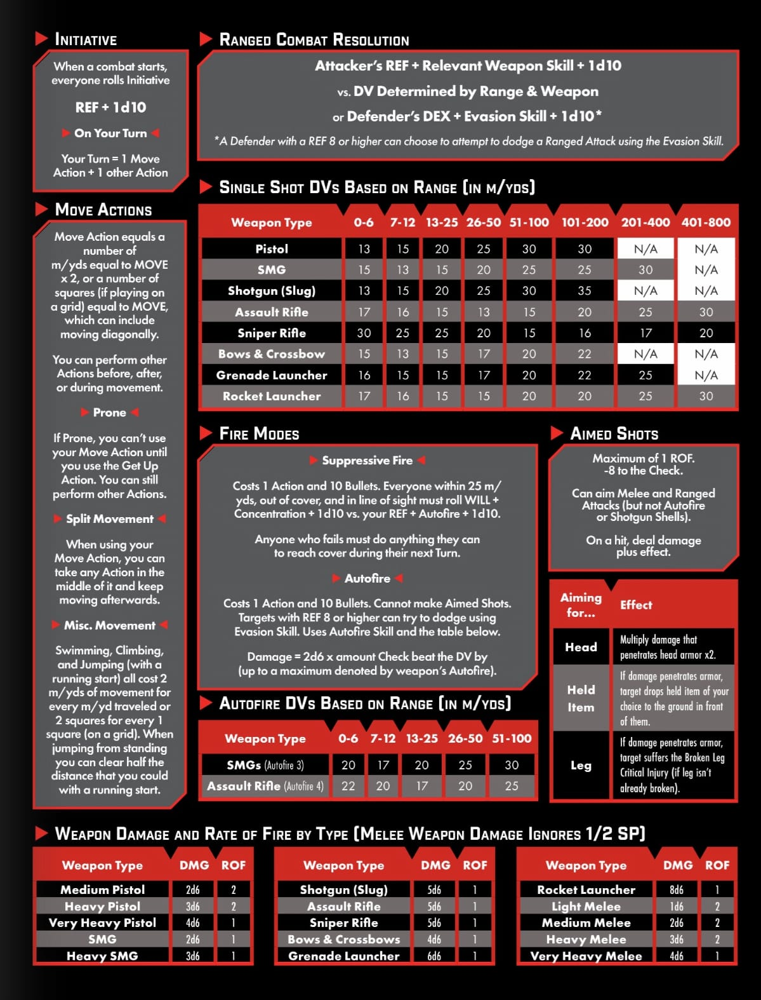
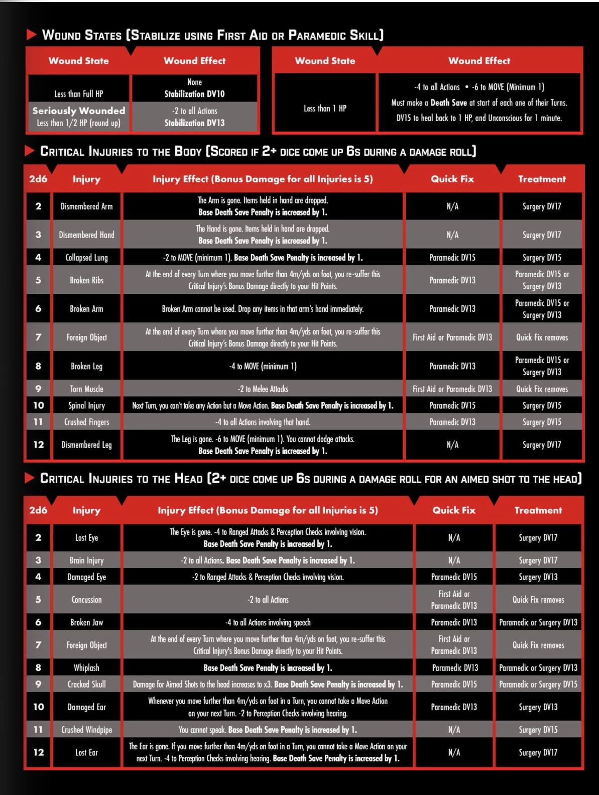
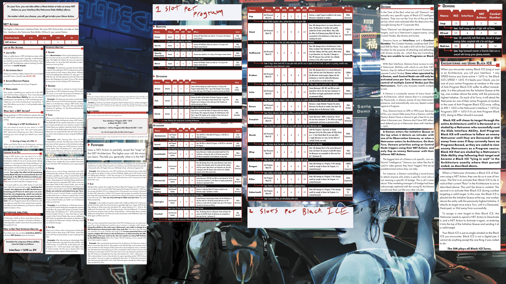

Quartel General

Ajuda
Tabelas e descrições para ajudar tanto os jogadores quanto o mestre. Obs: Esta parte ainda está em desenvolvimento e o desenvolvedor aceita novas ideias e insights do que pode-se adicionar nesta sessão.
Tabela para o Mestre

Tabela Ataque Corpo-a-Corpo

Tabela Ataque a Distância

Tabela Ferimentos e Ataques Concentrados

Tabela Netrunning

Gírias das Ruas
- Tempo do Vermelho: Uma gíria para o período de 2023 até 2040, tirada dos céus vermelhos comuns em todo o mundo como um efeito colateral da 4° Guerra Corporativa.
- AV: Se pronuncia “Ei-Vi”. Gíria comum para veículos voadores.
- Biomon: Abreviação para Biomonitor,um dispositivo cibernético médico que, como o nome sugere, monitora constantemente os sinais vitais de uma pessoa.
- Boneca: Uma pessoa, independente do gênero, equipada com um tipo especial de implante cibernético dissociativo que permite que uma nova persona, semi-invisível, assume temporariamente o controle da fala e das funções motoras antes de apagar a memória do dono de tudo o que aconteceu depois.
- Boostergang: Qualquer membro de uma gangue que utiliza implantes cibernéticos , roupas de couro e pratica violência aleatória.
- Caco: Um meio para armazenar e transportar dados.
- Carneespaço: Um termo usado por Trilha-Redes para se referir ao mundo físico.
- Choom: Gíria neoafro-americana para amigo ou membro da família.
- Ciberespaço: A Rede.
- Delta: Sair, partir.
- Drogas de Combate: Qualquer uma de uma série de drogas sintéticas criadas para aumentar a velocidade, a resistência e os reflexos.
- Ebucks ou Edinhos: Pronúncia usada para significar eurodólares.
- Edgerunner: Alguém que vive no limite. Um cyberpunk, ou seja, alguém que se imergiu na era da mudança tecnológica implantando cibernética, aprimorando suas habilidades, usando armas e/ou sua astúcia e percepções para se opor às megacorporações.
- Medicânico: Cirurgião especializado em implantação de implantes cibernéticos ilegais.
- Mercado Noturno: Mercados temporários, fora do radar criados por grupos de Fixers com conexões sólidas. No Tempo do Vermelho, um Mercado Noturno é o melhor lugar para encontrar novos implantes e equipamentos.
- Meter: Fazer sexo. Também significa esquecer algo.
- Neurodança (ND): Uma gravação digital da memória de alguém, incluindo informações sensoriais e emoções. Essa tecnologia neural também se tornou uma nova forma de entretenimento digital interativo.
- NDX: Gravações digitais de memórias que apresentam cenas grotescas e bizarras, incluindo várias formas de violência, tortura e até estupro e assassinato.
- Nômade: Termo usado para designar membros de uma comunidade nômade agrupados em "famílias" semelhantes a tribos que residem em acampamentos construídos por eles mesmos enquanto percorrem o país.
- RABIDS: Uma forma particularmente mortal de Black ICE se espalhou pela antiga Rede após a morte de seu criador, o lendário Trilha-Redes Rache Bartmoss.